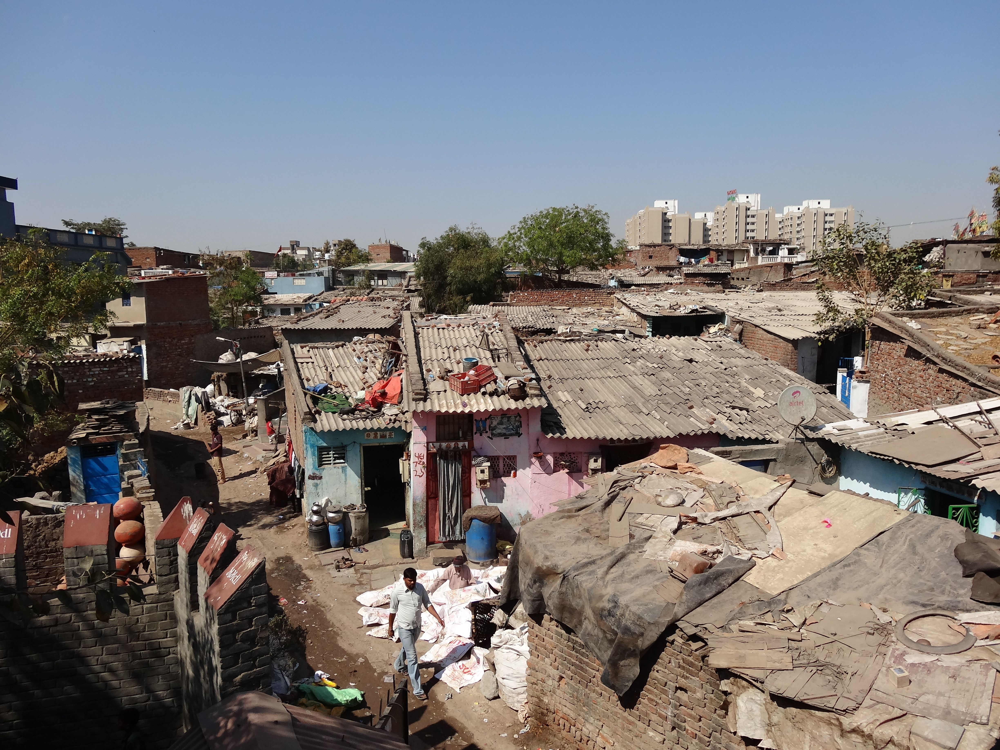
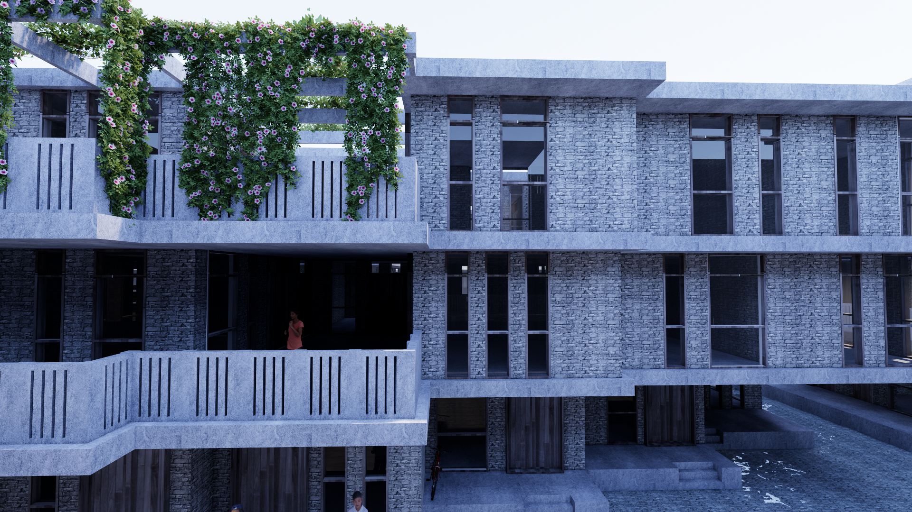
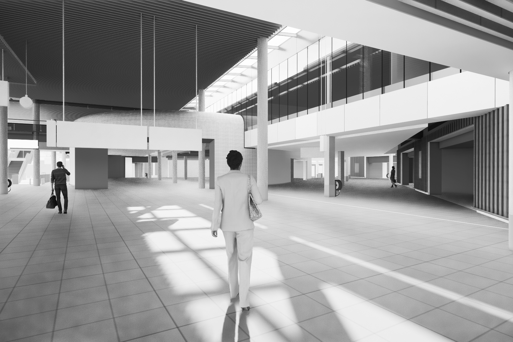

Hidden Home Anker
Hidden About Anker
INTRODUCTION · HOUSING INDIA
Ahmedabad, India,
This project tackles the problems of trying to deliver sustainable housing for people that cannot afford it. Can we find a housing strategy that allows for yield on a plot of land for people that have lived in the slums of Ahmedebad (India)? This project proposes a solution that is not only affordable but also suitable for the context of Ahmedabad and its people.
Slum · Ahmedabad by Nicole Wasser
Ahmedabad is a vibrant and diverse city. The city however also has to deal with a certain amount of slum areas. Situated in an arid climate in which the weather is often hot and offers a monsoon period the situation for the inhabitants of those slums is close to unbeareble.
However, when dealing with the realism of the situation, money is the thing that is needed to upgrade their living situation. For the city of Ahmedebad the question therefore arose, how can we provide housing for the poor and still be able to afford it. For this reason, they know that they will need to build efficiently concerning the amount of space that one can provide per housing entity. As many houses on a certain plot of the land as possible is the solution.
The following project shows a highly dense housing strategy that remains pleasurably livable for all levels of the society of Ahmedebad.
PROJECT PROPOSAL
As introduced beforehand this project proposes a housing plan for the poor people of Ahmedebad that are currently living in slums. This project succeeded in making an attractive living and partially working area that is simultaneously extremely dense. With this strategy, the density of the project nearly goes unnoticed. The harmony within the built structure is maximized and the ability to feel secluded/ the have private areas guaranteed. The privacy is provided by the use of courtyard and internal walkways through the housing entities on different levels. This way many corners are created in which one can feel solitude in varying degrees.
"Maximization of Shadow and Flooding Prevention"

The structures of the dwellings have many overhangs in order to create as much shadow as possible in the hot climate. Furthermore, the ground floor levels are slightly raised in order to prevent the flooding of homes during monsoon periods.
"Organic vs Rational"

"The formation of the dwellings is such that one can feel calm in such a densely populated area and still feel stimulated. The stimulation is guaranteed by the organic formation of the central houses. The calmness is guaranteed by the rational/straight formation of the opposing dwellings"
